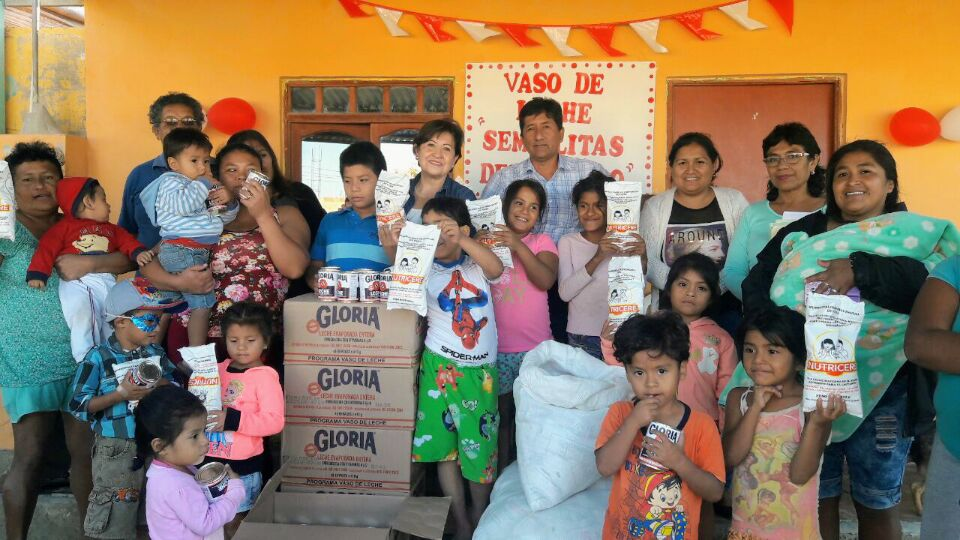

Programa Vaso de Leche

El programa de Vaso de Leche es un programa social creado para proveer en la alimentación a través de la entrega de una ración de alimentos a la población vulnerable, con el propósito de ayudarla a superar la inseguridad alimentaria en la que se encuentra y mejorar la calidad de vida.
Primera Prioridad
Niños de 0 a 6 años
Madres Gestantes
Madres en período de Lactancia
Personas mayores de 65 años
Objetivos
Contribuir a mejorar el nivel nutricional y la calidad de vida.
Reducir la mortalidad infantil.
Fomentar la lactancia materna.
Suministrar diariamente una ración complementaria a los niños, madres gestantes y lactantes.
Requisitos
Copia de DNI de la madre o padre
Copia de Control Pre Natal (Si es madre gestante)
Copia de DNI del menor hijo
Copia de recibo de luz o agua.
Copia de Carnet del CONADIS o de OMAPED